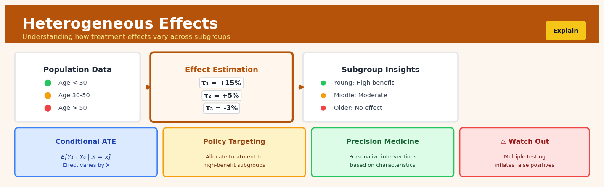

Heterogeneous Effects#


The biggest mistake I see with heterogeneous effects is testing dozens of subgroups without adjusting for multiple comparisons, leading teams to chase spurious findings that don't replicate. Always pre-specify your subgroups of interest or use methods like Bonferroni correction to control the family-wise error rate. Remember that every subgroup you test is another opportunity for a false discovery, so your p-value threshold needs to account for that.
The 60-Second Version#
What it does: Heterogeneous effects analysis reveals which customers, segments, or conditions respond differently to the same treatment—like a promotion or product change.
When to use it: You’ve proven something works on average, but suspect it works brilliantly for some people and poorly (or negatively) for others, and you need to know who is who.
What you get back: A score or rule for each individual predicting their personal treatment effect, allowing you to target interventions where they’ll work best and avoid them where they’ll backfire.
At a Glance:
Difficulty |
Advanced |
Typical runtime |
Minutes to hours on 100K rows |
What you bring |
Treatment assignment, outcomes, and rich individual characteristics from an experiment or credible quasi-experiment |
What you get |
Individual-level treatment effect predictions or segment-specific effect estimates |
Heuristix bucket |
Explain — Causal Analysis & Interpretation |
The average effect can be wildly misleading—a treatment that helps 60% and harms 40% averages to “slightly positive” but demands segmented deployment.
Learning Objectives#
After reading this chapter, a business user will be able to:
Identify situations where a single average effect masks critical variation—such as when a promotion works for some customer segments but backfires for others, or when a policy change benefits certain regions while harming others.
Interpret heterogeneous effects visualizations and tables to explain which subgroups experience larger or smaller treatment effects, translating technical outputs like CATE estimates into actionable business insights for leadership.
Prioritize interventions by targeting treatments toward the segments where they generate the highest impact, optimizing resource allocation based on predicted individual-level or subgroup-level treatment effects.
After reading this chapter, a data scientist will be able to:
Implement causal forests, meta-learners (S-learner, T-learner, X-learner), and regression-based heterogeneity methods in Python or R, correctly handling propensity score estimation and cross-fitting procedures to avoid overfitting bias.
Tune the complexity-variance trade-off by selecting appropriate regularization parameters, tree depth limits, and ensemble sizes while balancing the precision of subgroup effect estimates against the risk of spurious heterogeneity.
Validate heterogeneous effects estimates using calibration tests, honest inference procedures, and placebo checks to detect whether observed variation reflects true treatment effect differences or artifacts of model misspecification and multiple testing.
Overview#
Heterogeneous effects analysis estimates how causal treatment effects vary across different subgroups or along continuous characteristics of a population. Rather than assuming a single average treatment effect applies uniformly to all units, this family of methods—sometimes called conditional average treatment effect (CATE) estimation or treatment effect heterogeneity—recovers the potentially different effects that treatments have on different individuals or segments. Heterogeneous effects methods sit at the intersection of causal inference and machine learning, combining the identification strategies of econometrics with the flexible function approximation capabilities of modern predictive algorithms.
When to Use This#
Targeted marketing campaigns: Use this when you want to identify which customer segments respond most strongly to a promotion, allowing you to allocate marketing spend to high-responders rather than treating all customers identically.
Personalised pricing and discounts: Use this when you need to understand how price sensitivity varies across customer demographics, purchase history, or geographic regions to optimise revenue.
Medical treatment personalisation: Use this when clinical trial data suggests that a drug works on average, but you suspect that patient characteristics (age, comorbidities, genetic markers) modify the treatment’s efficacy.
Policy targeting in public programmes: Use this when government resources are limited and you need to identify which populations benefit most from an intervention (job training, educational subsidies, healthcare outreach).
A/B test deep-dives: Use this when your A/B test shows a statistically significant average effect, but you want to understand whether the effect is driven by specific user segments or is truly uniform.
Churn prevention programme design: Use this when you have estimated that retention incentives reduce churn on average, but you need to identify which at-risk customers would benefit most from intervention.
Credit policy differentiation: Use this when a blanket credit policy change has been tested and you want to understand how default risk responses differ by borrower characteristics.
Do NOT use this when you lack a credible identification strategy: Heterogeneous effects methods require the same identification assumptions as average effect estimation—if you cannot credibly estimate the average effect, you cannot estimate heterogeneous effects.
Do NOT use this when sample sizes are insufficient for subgroup analysis: Estimating treatment effect variation requires substantially more data than estimating a single average; small samples will produce noisy, unreliable heterogeneity estimates.
Do NOT use this when the treatment is poorly defined or varies in intensity: If the treatment itself is heterogeneous in ways you cannot measure, apparent effect heterogeneity may actually reflect treatment heterogeneity.
Questions This Answers#
Targeting & Personalization#
Which customer segments should we actually target with this new promotion — and which ones should we leave alone?
Our competitor analysis says email works, but does email marketing actually drive sales for our high-value customers versus our price-sensitive shoppers?
If we roll out premium support to everyone it costs $2M annually — which customer types actually increase their lifetime value enough to justify it?
The clinical trial showed the drug works on average, but for which patient profiles does it actually improve outcomes versus cause side effects?
Should we offer the discount to cart abandoners across the board, or does it only work for certain types of visitors?
Resource Allocation & ROI#
We’re spending $500K on training programs — should we invest more in onboarding new hires or upskilling tenured employees?
Which store locations will see positive ROI from extended hours versus just burning money on labor costs?
Our ads show a 3% average lift, but are we wasting budget on audiences that would have converted anyway?
Does our premium pricing strategy work in urban markets the same way it does in suburban ones, or are we leaving money on the table?
Strategic Planning & Scale Decisions#
Before we scale this pilot nationwide, which regions or demographics will actually see the same results we saw in the test market?
Our A/B test said “launch the feature” — but will it help user engagement for power users, casual users, or both?
If we can only personalize one part of the customer journey, where will tailoring the experience create the most value?
The average effect is break-even, but are there specific segments where this investment becomes profitable enough to move forward?
How It Works#
Imagine a doctor prescribing a new blood pressure medication to one hundred patients. After six months, the average reduction is 10 points—a modest success. But when the doctor looks closer, she discovers something remarkable: younger patients see almost no benefit (2 points), middle-aged patients improve moderately (9 points), while older patients experience dramatic drops (22 points). The “average” of 10 points was hiding wildly different realities. If she had stopped at the average, she would have missed that this drug works brilliantly for seniors but wastes money for younger patients. Heterogeneous effects analysis does exactly this detective work—it reveals how the same intervention produces different outcomes for different types of people.
STANDARD ANALYSIS HETEROGENEOUS EFFECTS ANALYSIS
(everyone) (split by subgroups)
┌─────────────────┐ ┌──────────┬──────────┬──────────┐
│ Average Effect │ │ Young │ Middle │ Older │
│ │ │ Age │ Age │ Age │
│ +10 │ → ├──────────┼──────────┼──────────┤
│ points │ │ +2 │ +9 │ +22 │
│ │ │ points │ points │ points │
└─────────────────┘ └──────────┴──────────┴──────────┘
Also by income level:
┌──────────┬──────────┬──────────┐
│ Low │ Medium │ High │
│ Income │ Income │ Income │
├──────────┼──────────┼──────────┤
│ +15 │ +8 │ +6 │
│ points │ points │ points │
└──────────┴──────────┴──────────┘
Single number hiding Reveals different effects across
important variation multiple characteristics
Step 1: Establish the baseline causal effect. First, the method calculates what we already know—the average treatment effect for everyone in the study. This gives us our starting point: across all people, the treatment changes outcomes by some average amount. This is the single number most studies stop at.
Step 2: Identify the characteristics that might matter. Next, we gather information about ways people differ—their age, income, education, location, health status, or any other features we think might influence how they respond to treatment. These become our candidate “splitting variables” for finding different subgroups.
Step 3: Search for meaningful splits. The algorithm systematically explores different ways to divide people into groups. It might try “people under 40 versus over 40” or “high income versus low income” or combinations like “young and urban versus old and rural.” For each potential split, it checks whether the treatment effect differs substantially between the groups.
Step 4: Build a tree or surface of effects. The method creates a structure—often visualized as a decision tree or a smooth surface—that maps each person’s characteristics to their expected treatment effect. Someone who is 65 years old with low income gets mapped to one effect estimate, while a 30-year-old with high income gets mapped to a different one.
Step 5: Validate and prune. To avoid finding spurious patterns that don’t truly exist, the method tests whether discovered differences hold up on fresh data not used in the initial search. Splits that seem real and robust stay; those that appear due to random noise get removed.
The key insight: By systematically searching for subgroups where treatment effects differ, heterogeneous effects analysis transforms a single average into a personalized prediction—revealing not just whether a treatment works on average, but precisely for whom it works best.
The Intuition#
Imagine you are a physician evaluating a new blood pressure medication. A randomised clinical trial has established that the drug reduces systolic blood pressure by 8 mmHg on average. But “on average” hides enormous variation: the drug might reduce blood pressure by 15 mmHg in older patients with high baseline readings, have no effect on young patients with mild hypertension, and actually increase blood pressure in patients taking certain other medications. If you prescribe the drug to everyone based on the average effect, you will over-treat some patients (wasting resources and risking side effects) and under-treat others (missing an opportunity for significant benefit). What you need is not the average treatment effect, but the conditional average treatment effect—the expected effect for a patient with specific characteristics.
The fundamental challenge is that we never observe both potential outcomes for any individual. We see what happened when a patient took the drug or what happened when they did not, but never both. This is the “fundamental problem of causal inference.” For average effects, we solve this by comparing groups: the average outcome of treated individuals minus the average outcome of control individuals. For heterogeneous effects, we need to make these comparisons within subgroups defined by covariates—comparing treated and control individuals who share similar characteristics.
The intuition behind modern heterogeneous effects estimators is to use machine learning to discover which characteristics matter for treatment effect variation, while using causal inference principles to ensure we are estimating effects rather than mere associations. A naive approach—simply fitting a predictive model with treatment-covariate interactions—fails because predictive accuracy and causal accuracy are different objectives. Heterogeneous effects methods modify standard machine learning algorithms to target causal quantities directly, using techniques like sample splitting, doubly robust estimation, and honest inference to produce valid estimates and confidence intervals.
The Mathematics#
Problem Setup and Notation#
Consider a sample of \(n\) units indexed by \(i = 1, \ldots, n\). For each unit, we observe:
\(W_i \in \{0, 1\}\): binary treatment indicator
\(X_i \in \mathcal{X} \subseteq \mathbb{R}^p\): vector of pre-treatment covariates
\(Y_i \in \mathbb{R}\): observed outcome
Under the potential outcomes framework, each unit has two potential outcomes: \(Y_i(1)\) (outcome if treated) and \(Y_i(0)\) (outcome if not treated). The observed outcome satisfies:
The individual treatment effect (ITE) is defined as:
Since we observe only one potential outcome per unit, \(\tau_i\) is never directly observable. The conditional average treatment effect (CATE) is the expectation of the ITE conditional on covariates:
Our goal is to estimate the function \(\tau: \mathcal{X} \to \mathbb{R}\).
Identification Assumptions#
Estimation of \(\tau(x)\) requires the following assumptions:
Assumption 1 (Unconfoundedness / Conditional Ignorability):
Treatment assignment is independent of potential outcomes conditional on observed covariates.
Assumption 2 (Overlap / Positivity):
where \(e(x) = \mathbb{P}(W_i = 1 \mid X_i = x)\) is the propensity score. Every unit has positive probability of receiving either treatment.
Assumption 3 (Stable Unit Treatment Value Assumption - SUTVA):
No interference between units and no hidden treatment variations.
Under these assumptions, the CATE is identified:
Define the conditional outcome functions:
Then \(\tau(x) = \mu_1(x) - \mu_0(x)\).
The T-Learner#
The simplest approach estimates \(\mu_1\) and \(\mu_0\) separately using any supervised learning algorithm:
Fit \(\hat{\mu}_1\) using observations with \(W_i = 1\)
Fit \(\hat{\mu}_0\) using observations with \(W_i = 0\)
Estimate \(\hat{\tau}(x) = \hat{\mu}_1(x) - \hat{\mu}_0(x)\)
This approach suffers from regularisation bias: if the learners regularise toward zero, the difference will be biased toward zero even when true effects exist.
The S-Learner#
An alternative fits a single model including treatment as a feature:
Then:
This approach can miss treatment effects entirely if the learner does not select the treatment variable.
Doubly Robust Estimation and the AIPW Score#
The augmented inverse propensity weighted (AIPW) estimator provides a doubly robust pseudo-outcome. Define:
Under the identification assumptions:
The pseudo-outcome \(\Gamma_i\) is an unbiased signal for the treatment effect and forms the basis for the DR-Learner and Causal Forests.
Causal Forests#
Causal Forests (Wager and Athey, 2018) adapt random forests to estimate \(\tau(x)\) directly. The key modifications are:
Honest Splitting: The sample is split into two parts—one for determining tree structure (splitting), one for estimating leaf effects (estimation). This prevents overfitting and enables valid inference.
Causal Splitting Criterion: Instead of minimising prediction error, trees maximise heterogeneity in treatment effects across child nodes. For a candidate split \(C\) creating children \(C_L\) and \(C_R\):
where \(\hat{\tau}_{C_L}\) and \(\hat{\tau}_{C_R}\) are estimated treatment effects in each child node.
Leaf Estimation: Within each leaf \(L\), the treatment effect is estimated as:
Forest Aggregation: The final estimate averages across \(B\) trees:
Asymptotic Properties#
Under regularity conditions, the causal forest estimator satisfies:
where \(\hat{\sigma}(x)\) is a consistent variance estimator. This enables construction of valid confidence intervals:
Edge Cases and Degenerate Conditions#
Perfect overlap violation: When \(e(x) \approx 0\) or \(e(x) \approx 1\), the AIPW pseudo-outcomes have high variance. Propensity score trimming is recommended.
Insufficient within-leaf variation: If leaves contain only treated or only control units, leaf-level effects cannot be estimated. Minimum leaf size constraints prevent this.
Constant treatment effects: When \(\tau(x) = \tau\) for all \(x\), heterogeneous effects methods will estimate the constant correctly but with less efficiency than methods designed for homogeneous effects.
Understanding the Mathematics#
The Conditional Average Treatment Effect (CATE)#
The equation: $\(\tau(x) = E[Y_i(1) - Y_i(0) | X_i = x]\)$
Read it aloud: The treatment effect at a specific value of characteristics x equals the expected difference between the outcome if unit i receives treatment and the outcome if unit i receives control, given that unit i has characteristics equal to x.
What each symbol means:
\(\tau(x)\) = the treatment effect for individuals with characteristics x
\(E[\cdot]\) = the expected value (average)
\(Y_i(1)\) = the outcome for unit i under treatment
\(Y_i(0)\) = the outcome for unit i under control
\(X_i = x\) = unit i has specific covariate values x
\(|\) = “given that” or “conditional on”
A concrete numerical example: Suppose we’re studying whether a premium email campaign increases customer purchases. For customers with characteristics x = (age=35, prior_purchases=5), we observe: customers who received the email spent an average of \(180, while similar customers who didn't spent \)120. So \(\tau(x) = 180 - 120 = 60\) dollars. This is the treatment effect for 35-year-olds with 5 prior purchases.
Why this equation matters: Without conditioning on x, we’d miss that the email campaign works much better for this customer segment than for retirees with no purchase history—wasting marketing budget on the wrong targets.
The S-Learner Prediction Function#
The equation: $\(\hat{\mu}(x, w) = \hat{f}(x, w)\)$
Read it aloud: The predicted outcome equals a single function f that takes both the individual’s characteristics x and their treatment status w as inputs.
What each symbol means:
\(\hat{\mu}(x, w)\) = predicted outcome given characteristics and treatment
\(\hat{f}(\cdot)\) = a flexible machine learning model (random forest, neural net, etc.)
\(x\) = individual characteristics (age, income, browsing history, etc.)
\(w\) = treatment indicator (1 = treated, 0 = control)
A concrete numerical example: A subscription service trains a random forest on 50,000 customers. For a customer with monthly_logins=15, account_age_days=120, and discount_received=1, the model predicts \(\hat{\mu}(x=\{15, 120\}, w=1) = 0.82\) probability of renewal. For the same customer without the discount (\(w=0\)), it predicts \(\hat{\mu}(x=\{15, 120\}, w=0) = 0.67\). The difference (0.82 - 0.67 = 0.15) is the estimated treatment effect.
Why this equation matters: The S-Learner lets powerful machine learning algorithms capture complex interactions between customer traits and treatment response, rather than forcing us to hand-specify which segments matter.
Estimating the CATE with S-Learner#
The equation: $\(\hat{\tau}(x) = \hat{\mu}(x, 1) - \hat{\mu}(x, 0)\)$
Read it aloud: The estimated treatment effect at x equals the model’s prediction when we set treatment to 1 minus the prediction when we set treatment to 0, holding characteristics x constant.
What each symbol means:
\(\hat{\tau}(x)\) = estimated treatment effect for characteristics x
\(\hat{\mu}(x, 1)\) = predicted outcome under treatment
\(\hat{\mu}(x, 0)\) = predicted outcome under control
A concrete numerical example: A logistics company tests route optimization software. For a driver with experience_years=8 and avg_daily_stops=45, the model predicts 92 minutes average delivery time with the software and 108 minutes without it. Therefore \(\hat{\tau}(x) = 92 - 108 = -16\) minutes—this driver type saves 16 minutes per route.
Why this equation matters: This calculation reveals which driver profiles benefit most from the software, allowing targeted rollout to maximize ROI rather than deploying uniformly.
The T-Learner Separate Models#
The equation: $\(\hat{\mu}_0(x) = \hat{f}_0(x) \text{ and } \hat{\mu}_1(x) = \hat{f}_1(x)\)$
Read it aloud: We estimate two completely separate models: model zero predicts outcomes using only control group data, and model one predicts outcomes using only treatment group data.
What each symbol means:
\(\hat{\mu}_0(x)\) = predicted outcome under control
\(\hat{\mu}_1(x)\) = predicted outcome under treatment
\(\hat{f}_0(\cdot)\) = model trained exclusively on control units
\(\hat{f}_1(\cdot)\) = model trained exclusively on treated units
A concrete numerical example: An online retailer tests a new checkout flow. They train one random forest on 30,000 customers who saw the old checkout (control model) and another on 30,000 who saw the new flow (treatment model). For a customer with cart_value=$85 and session_time=6_minutes, the control model predicts 68% conversion while the treatment model predicts 79% conversion. The treatment effect is 79% - 68% = 11 percentage points for this customer type.
Why this equation matters: Separate models allow the relationship between customer characteristics and conversion to differ fundamentally between checkout designs, rather than assuming treatment only shifts the outcome up or down.
The Big Picture#
The mathematics of heterogeneous effects achieves one fundamental goal: mapping the treatment effect landscape across different types of individuals. We use these particular equations because simple difference-in-means can’t capture how effects vary—a single number collapses away all the heterogeneity we’re trying to discover. The CATE framework formalizes “different effects for different people” as a conditional expectation, which machine learning models can then estimate by either including treatment as a feature (S-Learner) or building separate response surfaces (T-Learner). Both approaches transform the question “does it work?” into the richer question “for whom does it work, and how much?” In essence, we’re trading a single average for an entire function that reveals where our intervention delivers value.
Python Implementation#
import numpy as np
import pandas as pd
from sklearn.model_selection import train_test_split
from econml.dml import CausalForestDML
from econml.cate_interpreter import SingleTreeCateInterpreter
import matplotlib.pyplot as plt
# Set random seed for reproducibility
np.random.seed(42)
# Generate synthetic data with heterogeneous treatment effects
n = 5000
p = 10
# Covariates
X = np.random.normal(0, 1, (n, p))
X_df = pd.DataFrame(X, columns=[f'X{i}' for i in range(p)])
# True propensity score (varies with X0)
e_true = 1 / (1 + np.exp(-0.5 * X[:, 0]))
W = np.random.binomial(1, e_true)
# True CATE: treatment effect depends on X0 and X1
# Effect is positive for high X0, negative for low X0
# Effect magnitude increases with |X1|
tau_true = 2 * X[:, 0] + X[:, 1] * X[:, 0]
# Baseline outcome (confounded - depends on X)
mu_0 = X[:, 0] + X[:, 1]**2 + 0.5 * X[:, 2]
# Observed outcome
Y = mu_0 + W * tau_true + np.random.normal(0, 1, n)
print("Data generated successfully")
print(f"Sample size: {n}")
print(f"Number of treated: {W.sum()}")
print(f"True ATE: {tau_true.mean():.3f}")
# Split data for out-of-sample evaluation
X_train, X_test, W_train, W_test, Y_train, Y_test, tau_test = train_test_split(
X, W, Y, tau_true, test_size=0.2, random_state=42
)
# Fit Causal Forest using econml's CausalForestDML
# This uses double machine learning for debiasing
cf = CausalForestDML(
model_y='auto', # Automatic model selection for outcome
model_t='auto', # Automatic model selection for treatment
n_estimators=200, # Number of trees
min_samples_leaf=10, # Minimum samples per leaf
max_depth=None, # No depth limit
honest=True, # Use honest estimation
inference=True, # Enable inference for confidence intervals
random_state=42
)
# Fit the model
cf.fit(Y_train, W_train, X=X_train)
print("\nCausal Forest fitted successfully")
# Estimate CATEs on test set
tau_hat = cf.effect(X_test)
tau_hat_interval = cf.effect_interval(X_test, alpha=0.05)
# Evaluate estimation quality
mse = np.mean((tau_hat - tau_test)**2)
correlation = np.corrcoef(tau_hat, tau_test)[0, 1]
coverage = np.mean((tau_test >= tau_hat_interval[0]) &
(tau_test <= tau_hat_interval[1]))
print(f"\n--- Estimation Performance ---")
print(f"MSE: {mse:.4f}")
print(f"Correlation with true effects: {correlation:.4f}")
print(f"95% CI coverage: {coverage:.3f}")
# Estimate average treatment effect
ate = cf.ate(X_test)
ate_interval = cf.ate_interval(X_test, alpha=0.05)
print(f"\n--- Average Treatment Effect ---")
print(f"Estimated ATE: {ate:.3f}")
print(f"95% CI: [{ate_interval[0]:.3f}, {ate_interval[1]:.3f}]")
print(f"True ATE (test set): {tau_test.mean():.3f}")
# Feature importance for treatment effect heterogeneity
feature_importance = cf.feature_importances_
importance_df = pd.DataFrame({
'Feature': [f'X{i}' for i in range(p)],
'Importance': feature_importance
}).sort_values('Importance', ascending=False)
print(f"\n--- Feature Importance for Heterogeneity ---")
print(importance_df.to_string(index=False))
# Interpret heterogeneity with a single tree summary
interp = SingleTreeCateInterpreter(max_depth=3)
interp.interpret(cf, X_test)
print(f"\n--- Treatment Effect by Subgroup (Interpretable Summary) ---")
# Create groups based on X0 (the main effect modifier)
## Visualisations


## Using This in Heuristix
### What Data to Connect
The Heterogeneous Effects node requires a dataset where you've already identified your treatment and outcome variables. Think of this as a "post-experiment" analysis—you need data that includes who received treatment, what happened to them, and characteristics that might explain differences in response.
**Required inputs:**
- **Treatment column** (binary or categorical): Which intervention each unit received
- **Outcome column** (numeric): The metric you're measuring
- **Covariate columns** (numeric or categorical): Characteristics that might moderate the treatment effect (age, region, prior behavior, etc.)
**Example input data:**
| customer_id | received_discount | purchase_amount | age_group | prior_purchases |
|-------------|-------------------|-----------------|-----------|-----------------|
| 1001 | 1 | 142.50 | 25-34 | 3 |
| 1002 | 0 | 98.20 | 45-54 | 12 |
| 1003 | 1 | 201.30 | 25-34 | 1 |
Connect your cleaned, merged dataset directly to the Heterogeneous Effects node input port.
### Configuration Parameters
| Parameter | What It Controls | Default | When to Change It |
|-----------|-----------------|---------|-------------------|
| **Treatment Variable** | Which column indicates treatment assignment | (none) | Always set this first—it's your intervention variable |
| **Outcome Variable** | Which column measures the effect you care about | (none) | The KPI you're trying to move (revenue, conversion, retention, etc.) |
| **Effect Moderators** | Which variables might create different treatment responses | All numeric/categorical | Select theoretically meaningful splits (customer segments, contexts) not every column |
| **Estimation Method** | Algorithm for discovering heterogeneity (Causal Forest, S-Learner, T-Learner, X-Learner) | Causal Forest | Causal Forest works well generally; try X-Learner with small treatment groups |
| **Minimum Group Size** | Smallest subgroup to report separately | 30 | Increase to 50+ for noisier data; decrease if you have huge samples and need granularity |
| **Confidence Level** | Uncertainty intervals for subgroup effects | 95% | Keep at 95% for standard reporting; 90% if you're doing exploratory analysis |
| **Number of Trees** | Complexity of forest-based methods | 2000 | Increase to 4000+ for very large datasets; decrease to 500 for faster iteration |
### What You'll See as Output
The node produces several complementary views of treatment effect heterogeneity:
**Subgroup Effects Table**: Shows estimated treatment effects for each meaningful segment, with confidence intervals. You'll see which groups benefited most (and least) from treatment.
**Variable Importance Chart**: Ranks which characteristics matter most for explaining effect differences. This tells you *what* drives heterogeneity even before you look at specific subgroups.
**Effect Distribution Plot**: Visualizes the range of individual treatment effects across your population. A wide spread means substantial heterogeneity; a tight cluster means effects are relatively uniform.
**Added data columns**:
- `predicted_cate`: Estimated individual treatment effect for each unit
- `subgroup_id`: Assigned segment based on effect patterns
- `subgroup_effect`: Average effect within each unit's subgroup
### Connecting Downstream
**Policy Node**: Feed subgroup assignments and effect estimates to design differentiated intervention strategies—give the discount to high-responders, skip it for low-responders.
**Reporting/Dashboard Node**: Visualize which customer segments, regions, or contexts benefit most from your program.
**Uplift Scoring Node**: Use predicted individual effects for rank-ordering future treatment allocation decisions.
### Quick Start: Finding Your Best Responders
1. **Connect your experiment results dataset** to the Heterogeneous Effects node
2. **Set Treatment Variable** to your intervention indicator (e.g., `received_email`)
3. **Set Outcome Variable** to your success metric (e.g., `revenue_30d`)
4. **Select 3-5 Effect Moderators** you think might matter (start with segment, tenure, engagement_score)
5. **Run the node** and check Variable Importance first—this validates your intuitions
6. **Review Subgroup Effects Table** to find your most and least responsive segments
7. **Connect to Policy Node** to operationalize differentiated targeting
### Practical Tips from the Field
**Start with fewer moderators**: Including 20+ potential moderating variables creates noisy, overfit subgroups. Begin with 3-5 theoretically motivated variables, then expand if needed.
**Check the overlap assumption**: If certain subgroups received treatment 95%+ of the time, heterogeneity estimates for them will be unreliable. Filter to subgroups with reasonable treatment/control balance.
**Minimum group size matters more than you think**: A subgroup with huge estimated effects but only 15 people is probably noise. Trust segments with 50+ observations.
**Compare to average treatment effect**: Always contextualize subgroup effects against your overall ATE. A +5% effect in one segment means little if your average is +4.8%.
**Validate on holdout data when possible**: If you're making major resource allocation decisions based on discovered heterogeneity, confirm patterns hold in a separate sample before going all-in.
## Config Recipes
### Recipe 1: Quick Exploration with Causal Forests
**When to use:** Initial exploratory analysis on datasets with <50,000 observations where you need fast iteration to decide if heterogeneity exists.
**Settings:**
| Parameter | Value | Why |
|-----------|-------|-----|
| `n_estimators` | 500 | Fast training while maintaining reasonable stability |
| `min_samples_leaf` | 250 | Prevents overfitting in small subgroups |
| `max_depth` | 4 | Limits tree complexity for interpretability |
| `honesty` | True | Essential for valid inference even in exploration |
| `n_jobs` | -1 | Parallelizes across all cores |
**What you get:** Rough heterogeneity estimates with wide confidence intervals, sufficient to identify major effect variation patterns.
**Trade-off:** Confidence intervals will be too wide for precise targeting decisions; use only for go/no-go on full analysis.
### Recipe 2: Production-Ready Doubly Robust Estimation
**When to use:** Final analysis for deployment when you need defensible estimates with proper uncertainty quantification and model misspecification protection.
**Settings:**
| Parameter | Value | Why |
|-----------|-------|-----|
| `n_estimators` | 2000 | Ensures asymptotic properties kick in |
| `min_samples_leaf` | 100 | Conservative splitting for stable estimates |
| `cv_folds` | 10 | Robust cross-fitting for nuisance parameters |
| `propensity_clip` | (0.05, 0.95) | Trims extreme propensity scores |
| `calibration` | True | Ensures coverage of confidence intervals |
| `honest_fraction` | 0.5 | Half the data held out for estimation |
**What you get:** Asymptotically valid confidence intervals robust to either outcome or propensity model misspecification.
**Trade-off:** 3-5x longer training time and requires minimum 10,000 observations for reliable coverage.
### Recipe 3: High-Dimensional Confounding with Lasso Regularization
**When to use:** Observational data with >100 covariates where many are irrelevant, risking propensity model overfitting.
**Settings:**
| Parameter | Value | Why |
|-----------|-------|-----|
| `propensity_model` | LassoCV | Automatic feature selection for treatment model |
| `outcome_model` | Ridge | Shrinkage without feature elimination |
| `cv_lambda` | True | Cross-validates regularization strength |
| `max_iter` | 10000 | Ensures Lasso convergence with many features |
| `tol` | 1e-6 | Tight convergence for stable selection |
**What you get:** Sparse propensity models that avoid overfitting while flexibly modeling outcomes.
**Trade-off:** Requires strong overlap assumption; fails completely if treatment deterministically depends on unselected variables.
### Recipe 4: Continuous Treatment Dosage Effects
**When to use:** Treatment is continuous (ad spend, drug dosage, discount percentage) rather than binary—surprisingly common but often force-binned incorrectly.
**Settings:**
| Parameter | Value | Why |
|-----------|-------|-----|
| `treatment_type` | "continuous" | Enables kernel-based dose-response estimation |
| `kernel_bandwidth` | 0.1 * std(T) | Local smoothing around treatment values |
| `derivative_order` | 1 | Estimates marginal effect at each dose |
| `min_samples_leaf` | 50 | Lower threshold since fewer splits needed |
| `boundary_trim` | 0.05 | Removes extreme doses with poor support |
**What you get:** Smooth dose-response curves showing marginal returns at each treatment intensity level.
**Trade-off:** Loses ability to interpret effect "of treatment" versus "of no treatment"; gains policy-relevant optimal dosage identification.
## Business Applications
**Financial Services**
A mid-sized UK mortgage lender was offering the same 0.25% rate discount to all customers who set up automatic payments, costing £8M annually in foregone interest. Heterogeneous effects analysis revealed that younger first-time buyers (ages 25-32) were 47% more likely to adopt autopay even without any incentive, while customers over 50 with multiple banking relationships required the full discount to switch. By tailoring incentives—offering smaller discounts or non-monetary rewards to rate-insensitive segments—the bank maintained 94% of autopay adoption while reducing the programme cost by £3.1M annually.
**Retail & E-commerce**
An e-commerce fashion retailer with 1.8M SKUs was spending $240K monthly on free shipping promotions applied uniformly across all customer orders. Using CATE estimation on historical purchase data, they discovered that customers in metropolitan areas ordering items under $75 were highly price-sensitive (shipping fees reduced conversion by 31%), while suburban customers making larger purchases barely responded to free shipping offers. The retailer implemented geography- and basket-size-specific shipping thresholds, lifting overall conversion rate from 2.3% to 2.9% while cutting shipping subsidy costs by 38%, generating $4.2M in additional annual profit.
**Healthcare & Pharmaceuticals**
A regional hospital network treating 12,000 Type 2 diabetes patients annually prescribed intensive lifestyle counselling programs uniformly, at $420 per patient per quarter. Heterogeneous effects analysis of patient outcomes revealed that recently diagnosed patients under 45 with moderate HbA1c levels (6.5-7.5%) showed dramatic improvement with intensive intervention (average HbA1c reduction of 1.8 points), while older patients with long disease duration benefited equally from lower-cost digital monitoring. Reallocating resources based on predicted treatment heterogeneity improved population health outcomes by 23% while reducing programme costs from $20.2M to $14.7M annually.
**Insurance**
A European auto insurer was sending generic renewal reminder emails to all 890,000 policyholders 30 days before expiration, achieving a 73% retention rate. CATE modeling identified that customers who had filed claims in the past year responded strongly to messages emphasizing claims service quality (87% retention), accident-free drivers preferred price stability messaging (81% retention), and young drivers were most influenced by mobile app features (79% retention). Personalized messaging based on heterogeneous treatment effects lifted overall retention to 78.4%, preventing 48,000 policy lapses worth £14.3M in annual premium revenue.
**Manufacturing**
A semiconductor manufacturer operating four fabrication plants was implementing the same preventive maintenance protocol across all production lines, resulting in 127 hours of planned downtime per line annually. Heterogeneous effects analysis of equipment telemetry and maintenance records showed that older tools (8+ years) responded well to frequent interventions, but newer equipment experienced more failures from over-maintenance than from waiting for condition-based triggers. Tailoring maintenance intensity by equipment age and usage patterns reduced total downtime by 34 hours per line while cutting maintenance costs from $2.8M to $2.1M across the facility network.
**Logistics & Transportation**
A national courier service with 2,400 delivery drivers was offering all drivers the same $0.12 per package performance bonus for on-time delivery. Treatment effect heterogeneity revealed that rural route drivers, who already maintained 96% on-time rates due to predictable conditions, showed no improvement from bonuses, while dense urban drivers improved from 78% to 89% on-time delivery when incentivized. Concentrating bonuses on urban routes and raising them to $0.19 per package improved systemwide performance from 84% to 88% while reducing total incentive spend by $780K annually.
**Marketing & Advertising**
A consumer packaged goods company was running seasonal television campaigns with uniform $4.2M quarterly spending across all geographic markets. Heterogeneous effects modeling of historical sales lift revealed that some markets (coastal urban areas) showed 8-12% sales increases per impression, while others (rural Midwest) demonstrated minimal response even with heavy ad saturation. Reallocating 40% of budget from low-response to high-response markets, and substituting digital channels in treatment-resistant regions, increased overall campaign ROI from 1.4x to 2.3x—generating $3.8M in additional quarterly revenue with identical media spend.
**Telecommunications**
A mobile network operator offering unlimited data upgrades to all customers on capped plans (at $15/month) found that CATE analysis identified power users (top 30% of data consumption) would upgrade regardless of promotion, while moderate users needed the discount. By reserving promotions for the middle segment, they maintained 82% of upgrade volume while improving per-subscriber revenue by $4.20 monthly across 1.2M customers—$60M over five years.
**Energy & Utilities**
A municipal electric utility promoting smart thermostat adoption with uniform $125 rebates discovered through heterogeneous effects analysis that homeowners with older HVAC systems and high summer bills (top quartile) would adopt even with $50 rebates, while moderate-use customers were rebate-insensitive. Tiered incentives cut programme costs by 43% while achieving the same 28,000-household adoption target.
**Public Sector**
A state workforce development agency sending all unemployed residents to the same 6-week job training programme ($3,200 per participant) found that recent college graduates benefited minimally, while displaced workers over 45 gained substantially. Redirecting young workers to immediate placement services and concentrating training resources on older workers improved 6-month employment rates from 64% to 71% while serving 15% more people within the same budget.
**SaaS & Technology**
A B2B SaaS platform with 8,400 enterprise customers was offering all accounts the same quarterly business review format. Heterogeneous effects analysis showed that fast-growing startups (50%+ annual growth) valued product roadmap discussions (reducing churn by 8 percentage points), while mature enterprises prioritized cost optimization guidance (reducing churn by 11 points). Tailoring QBR content by customer segment reduced annual churn from 18% to 14%, retaining $6.7M in ARR.
## Worked Example
Sarah Chen, lead data scientist at HealthFirst Insurance, was sitting in a windowless conference room when the VP of Marketing dropped a bombshell: their new wellness program was showing a disappointing 2.3% average reduction in claims. "Should we scale it or kill it?" he asked. Sarah had learned not to trust averages. "Give me three days," she said.
The wellness program offered gym memberships, health coaching, and nutrition apps to policyholders. It cost $180 per person annually, and with a 2.3% claims reduction, the ROI was razor-thin. But Sarah suspected the program might work brilliantly for some people and not at all for others. If she could identify *who* benefited most, HealthFirst could target the program more precisely and turn a marginal initiative into a profitable one.
### The Data
Sarah pulled together eighteen months of data covering 12,000 policyholders randomly assigned to receive the wellness program offer. About half accepted. The dataset was messier than she'd hoped—age was missing for 3% of records, and someone had coded exercise frequency as both numbers and text ("2-3x/week"). She spent an afternoon cleaning it.
| policy_id | age | baseline_claims | enrolled_wellness | chronic_conditions | claims_after |
|-----------|-----|-----------------|-------------------|-------------------|--------------|
| P847291 | 34 | 2400 | 1 | 0 | 2180 |
| P847292 | 58 | 8900 | 1 | 2 | 8950 |
| P847293 | 29 | 1200 | 0 | 0 | 1340 |
| P847294 | 62 | 12000 | 1 | 3 | 10200 |
| P847295 | 41 | 3100 | 0 | 1 | 3450 |
### The Setup
Sarah opened her causal inference toolkit and configured a Causal Forest model—a machine learning approach specifically designed to estimate heterogeneous treatment effects. She thought carefully about her feature set: age, baseline claims, BMI, chronic condition count, and prior healthcare utilization. She excluded anything measured *after* enrollment, which could be affected by the treatment itself.
She set the forest to 4,000 trees, knowing that more trees would give her stable, robust estimates of how the treatment effect varied across the covariate space. The honesty parameter she left at the default—this ensured each tree used different data for building splits versus estimating effects, preventing overfitting. Sarah was essentially training the algorithm to find patterns in *who responded* to the program, not just who had high claims.
```python
import pandas as pd
from econml.grf import CausalForest
import numpy as np
# Load cleaned data
df = pd.read_csv('wellness_program_clean.csv')
# Define features, treatment, outcome
X = df[['age', 'baseline_claims', 'bmi',
'chronic_conditions', 'prior_er_visits']]
T = df['enrolled_wellness']
Y = df['claims_after']
# Fit causal forest
cf = CausalForest(
n_estimators=4000,
min_samples_leaf=50,
random_state=42
)
cf.fit(X, T, Y)
# Get individual treatment effects
treatment_effects = cf.predict(X)
df['estimated_effect'] = treatment_effects
# Segment by effect quartile
df['effect_quartile'] = pd.qcut(
treatment_effects,
q=4,
labels=['Q1_Low', 'Q2', 'Q3', 'Q4_High']
)
# Summary by quartile
summary = df.groupby('effect_quartile').agg({
'estimated_effect': 'mean',
'age': 'mean',
'chronic_conditions': 'mean'
}).round(2)
The Results#
The output made Sarah sit up straight. The treatment effect varied wildly:
Quartile |
Avg Effect ($ saved) |
Avg Age |
Chronic Conditions |
|---|---|---|---|
Q1_Low |
+$340 |
31 |
0.2 |
Q2 |
-$180 |
38 |
0.8 |
Q3 |
-$920 |
49 |
1.4 |
Q4_High |
-$2,100 |
58 |
2.3 |
The top quartile—older policyholders with multiple chronic conditions—saw claims drop by \(2,100 annually. They were engaged, motivated, and the program's coaching helped them manage their conditions. Meanwhile, young, healthy members in Q1 actually *increased* claims by \)340, possibly because the program made them more aware of minor issues worth addressing.
The Insight#
The 2.3% average effect was hiding a story of profound heterogeneity. For the right 25% of members, the program returned nearly 12:1 on investment. For the rest, it was either neutral or counterproductive. Sarah realized HealthFirst had been marketing the program identically to everyone—glossy brochures about “whole-body wellness” that resonated with people who didn’t need it and missed the people who did.
The Decision#
Sarah presented to the executive team with one slide: a scatterplot showing estimated treatment effects versus age and chronic conditions, color-coded by profitability. The CFO nodded slowly. Within a month, HealthFirst launched a targeted enrollment campaign focused on members 50+ with at least one chronic condition. Six months later, program enrollment was down 60% but claims savings had tripled. The program expanded to three additional states.
What Sarah Would Do Differently#
Looking back, Sarah wished she’d incorporated healthcare provider network data—she suspected members with established primary care relationships benefited more. She also would have been more conservative about the youngest members; while the model predicted increased claims, she wasn’t confident that was causal versus just noise in a low-utilization population.
Interpreting Your Results#
You’ve just run a heterogeneous effects analysis. Your screen shows CATE estimates, calibration plots, policy trees, and evaluation metrics. Here’s exactly what you’re looking at and what it means.
CATE Estimates Table#
Plain-English meaning: This table shows your estimated treatment effect for each observation or subgroup. If you ran a promotion experiment, each row tells you “for this type of customer, the promotion increased purchases by $X.” These aren’t observed outcomes—they’re model predictions of what the treatment would do to similar individuals.
Concrete benchmarks:
High variance (IQR > 2× mean effect): Strong heterogeneity exists; personalization could add significant value
Moderate variance (IQR = 0.5–2× mean effect): Some heterogeneity; segmentation may help
Low variance (IQR < 0.5× mean effect): Minimal heterogeneity; one-size-fits-all approach is probably fine
Red flags:
CATEs with opposite signs from the ATE (e.g., ATE = +5, but 40% of CATEs are negative) suggests serious effect heterogeneity—ignoring it means harming some segments
Extreme outliers (CATEs > 5× the ATE) often indicate model overfitting or data errors
All CATEs essentially identical means your model failed to detect heterogeneity (this might be real, or your features lack signal)
Calibration Plot (Predicted vs. Actual Effects)#
Plain-English meaning: This scatter plot checks if your model is honest. The x-axis shows what your model predicted the treatment effect would be for different groups. The y-axis shows what the effect actually was when you measure it. Points should cluster near the 45-degree line.
Concrete benchmarks:
R² > 0.6: Strong predictive power; trust your CATEs for targeting decisions
R² = 0.3–0.6: Moderate predictive power; use for broad segmentation but not individual targeting
R² < 0.3: Weak predictions; model captures little real heterogeneity
Red flags:
Systematic deviation from the 45-degree line (e.g., consistently overpredicting high effects) means biased estimates—don’t use for decisions
Strong calibration only at extreme predicted values means the model only works for obvious cases
No correlation whatsoever (flat cloud of points) means your covariates don’t predict treatment response
Policy Tree or Targeting Rules#
Plain-English meaning: These rules segment your population into “treat” vs. “don’t treat” groups to maximize total benefit. A rule like “treat if: age < 35 AND prior_purchases > 2” means treating this subgroup yields positive ROI, while treating others doesn’t.
Concrete benchmarks:
Policy value > 1.5× the treat-all value: Strong gains from targeting; implement these rules
Policy value = 1.1–1.5× treat-all: Modest gains; worth it if implementation is cheap
Policy value < 1.1× treat-all: Minimal improvement; targeting complexity isn’t worth it
Red flags:
Tree depth > 5 suggests overfitting; you won’t be able to operationalize or explain this
Rules splitting on a single feature repeatedly means that feature dominates (check if it’s a data artifact)
Recommended “don’t treat” group is your current high-value customers—you may be optimizing the wrong objective
Evaluation Metrics (QINI/AUUC)#
Plain-English meaning: These metrics measure how much better your heterogeneity model is than random targeting. QINI coefficient and Area Under Uplift Curve (AUUC) quantify: “If I treat the top 20% your model recommends vs. a random 20%, how much more benefit do I get?”
Concrete benchmarks:
QINI > 0.15 or AUUC > 0.6: Excellent targeting capability; meaningfully better than random
QINI = 0.05–0.15 or AUUC = 0.52–0.6: Detectable but modest improvement
QINI < 0.05 or AUUC < 0.52: Barely better than random; don’t bother targeting
Red flags:
QINI/AUUC curves that only separate from random in the top 5% means you can only identify a tiny treatable segment
Negative QINI means your model is worse than random—it’s anti-predicting who benefits
Sanity Check Checklist#
Average of CATEs ≈ known ATE: If these differ by >20%, your heterogeneity model doesn’t respect the experimental average
Check calibration R² > 0.2: Below this, you’re mostly seeing noise
Policy tree makes domain sense: If “treat young customers” but you sell retirement products, something’s wrong
Heterogeneity exists: Run a simple test—does splitting on any single covariate create groups with statistically different effects?
Sufficient sample in subgroups: Ensure smallest recommended segment has n > 50 per treatment arm
Good Enough to Act On?#
You should move from analysis to decision-making when: (1) calibration R² > 0.4, (2) policy value > 1.3× treat-all baseline, (3) your targeting rules are implementable (< 4 decision points), and (4) the recommended segments align with domain knowledge or provide an interpretable surprise. If you hit these thresholds, further analysis has diminishing returns—start piloting your targeting strategy.
Decision Guidance#
What This Result Is Telling You#
Heterogeneous effects analysis reveals that your intervention doesn’t work the same way for everyone—and that’s valuable strategic intelligence. When you discover that a marketing campaign drives 40% lift in high-income segments but only 5% in low-income segments, you’re not just seeing statistical noise; you’re uncovering fundamental differences in how value is created across your customer base. This matters because uniform rollout strategies leave money on the table: you either overspend reaching people who won’t respond or underspend on segments where returns would be exceptional.
The practical message is straightforward: stop making one-size-fits-all decisions. If treatment effects vary meaningfully across segments, you have three actionable options. First, target your intervention only where effects are strong, reducing cost per conversion. Second, customize the intervention itself—different messaging, pricing, or service levels for different groups. Third, reallocate budget from low-response to high-response segments without changing total spend. Each strategy requires confidence that the heterogeneity you’ve detected is real, not artifact.
The uncertainty around these estimates matters as much as the point estimates themselves. A model showing 15% effect in Segment A and 8% in Segment B might sound differentiated, but if confidence intervals span -5% to 35% and -10% to 26% respectively, those segments aren’t meaningfully different for decision purposes. You need both statistical separation (non-overlapping intervals) and practical separation (differences large enough to justify operational complexity).
Decision Points#
If you see this… |
It means… |
Recommended action |
Who acts on this |
|---|---|---|---|
Top-quintile CATE is >3× bottom-quintile AND confidence intervals don’t overlap |
Strong, reliable heterogeneity exists across the population |
Implement targeted rollout: focus resources on high-effect segments, deprioritize or eliminate spend on low-effect segments |
Marketing Director, Product Strategy |
Treatment effects positive in 60%+ of subgroups, with <5 percentage point variance across groups |
Near-uniform impact; heterogeneity is too small to operationalize |
Proceed with universal rollout; complexity of targeting outweighs marginal gains |
Operations Lead, Program Manager |
One segment shows strong positive effect (CATE >20%) but represents <5% of total population |
Discovered a niche with outsized impact but limited scale |
Create specialized pilot program for this micro-segment; explore what makes them unique for hypothesis generation |
Innovation Team, Analytics |
Estimated effects in key segments flip sign when you change model specification or validation fold |
Unstable heterogeneity detection; models are extrapolating, not learning |
Do not segment yet; collect more data or simplify to average treatment effect estimation |
Data Science Lead, Research |
When to Proceed vs. Investigate Further#
Proceed with confidence:
Confidence intervals for top vs. bottom treatment effect quintiles are non-overlapping
Heterogeneity patterns replicate across 3+ validation folds with <15% variance in CATE rankings
High-effect segments are operationally accessible (you can identify and reach them in production)
Cost of customized targeting is <40% of incremental value from heterogeneity-informed strategy
Proceed with caution:
CATE differences are 1.5–2.5× across segments with partial interval overlap
Sample sizes in smallest analyzed segment exceed 200 observations but fall below 500
Implementation requires new operational capabilities (tracking, personalization infrastructure)
Investigate before acting:
Rank correlation of predicted vs. actual CATE in holdout falls below 0.40
More than 20% of observations have confidence interval width exceeding 2× the estimated CATE
Business stakeholders cannot explain why heterogeneity exists in discovered pattern
Do not use these results yet:
Average confidence interval width exceeds average CATE magnitude
Heterogeneity detection model achieves AUC <0.60 for separating high vs. low responders
Fewer than 50 treated observations exist in segments you’re considering targeting
The Cost of Getting This Wrong#
Misinterpreting heterogeneous effects leads to expensive strategic mistakes that compound over time. A retail bank targeting personal loan offers to “high-CATE” segments based on unstable estimates wastes millions in misdirected acquisition spend while alienating the actually-responsive customers they’re ignoring. Worse, when the targeted campaign underperforms, leadership loses confidence in personalization entirely, abandoning the strategy before refining it—a classic case of implementation failure blamed on the concept itself. On the flip side, failing to detect real heterogeneity means continuing uniform strategies that subsidize low-value interactions with high-value budget: you’re paying premium rates to reach customers who’d never convert while underinvesting in segments delivering 10× returns. The opportunity cost isn’t just wasted spend on this campaign; it’s the forgone learning about what drives differential response, knowledge that would inform product development, pricing strategy, and market positioning for years to come.
Common Pitfalls#
The Cherry-Picked Segment
Here’s what happened: A marketing analyst at a consumer goods company ran a causal forest on their latest promotion and discovered that customers aged 55-62 with prior purchases between \(200-\)250 showed a 47% lift—the highest of any segment. They built an entire targeting strategy around this group. Three months later, the campaign flopped. The segment contained only 83 customers in the original analysis, and the effect didn’t replicate.
Why it happens: When you partition continuous variables, you create dozens or hundreds of subgroups. Pure chance ensures some will show extreme effects. The human brain loves finding patterns and treats all discovered segments as equally credible insights.
How to detect it: Check the sample_size column in your results table. If your most exciting segment has fewer than 100 observations (or whatever threshold makes sense for your effect size), you’re likely seeing noise. Calculate the ratio of segments examined to total sample size—if you’re slicing the data into hundreds of tiny groups, false discoveries are inevitable.
The fix: Pre-specify segments of interest or use multiple testing corrections like Bonferroni adjustment. Report confidence intervals, not just point estimates, and validate findings on holdout data before operationalizing.
The Baseline Overfitting Trap
Here’s what happened: A junior data scientist at a healthcare startup used XGBoost with 200 trees to model baseline outcomes μ₀(X) and μ₁(X) before calculating CATEs. Their heterogeneous effects plot showed dramatic variation—effects ranging from -15% to +30% across patient characteristics. They presented this as evidence of strong personalization opportunities. A senior colleague re-ran the analysis with cross-fitted models and found effects were actually flat within confidence bands.
Why it happens: Overfitted baseline models mistake noise for signal in the outcome itself, then attribute that noise to treatment heterogeneity. This is especially pernicious because more sophisticated models appear more “advanced.”
How to detect it: Look at your baseline model’s out-of-sample R² or validation set performance. If μ₀(X) and μ₁(X) models achieve suspiciously high in-sample fit (R² > 0.9 in complex domains) but poor validation performance, you’ve overfit. Run a permutation test: randomly shuffle treatment assignments and re-estimate. If you still find “significant” heterogeneity, your method is generating false positives.
The fix: Use honest splitting (separate samples for model building and effect estimation) or cross-fitting procedures built into packages like EconML or grf.
The Wrong Reference Class
Here’s what happened: A product manager received a CATE analysis showing that their new feature had a 12% engagement lift for “power users” but only 3% for casual users. They concluded the feature wasn’t worth showing to casual users and hid it behind advanced settings. Engagement actually dropped because casual users who would have benefited never saw it. The 3% effect was relative to a control group that included many users who would never engage regardless—the reference class was too broad.
Why it happens: Business stakeholders interpret treatment effects as absolute performance predictions rather than counterfactual comparisons within subgroups that include non-responders.
How to detect it: Compare baseline conversion rates (E[Y₀|X]) across subgroups alongside treatment effects. If the casual user segment has a 5% baseline and 3% lift, that’s 60% relative improvement. Check if the effect size is proportional to baseline opportunity.
The fix: Always report treatment effects alongside baseline rates and communicate findings as “among casual users who saw the feature, conversion was 3 percentage points higher than similar users who didn’t.”
The Continuous Confusion
Here’s what happened: An experienced analyst ran a meta-learner and generated predicted treatment effects τ̂(X) for each customer. They sorted customers by predicted effect and sent the top decile to sales. Response rates were no better than random targeting. The model had learned the propensity score (who gets treated) rather than the treatment effect (who benefits).
Why it happens: When treatment assignment correlates with outcomes, machine learning models naturally learn that correlation. Without proper causal structure, τ̂(X) captures confounding, not heterogeneity.
How to detect it: Check if your predicted effects τ̂(X) correlate strongly (|r| > 0.5) with the propensity score P(W=1|X). Plot them against each other—if you see a clear linear relationship, your model learned selection bias. Run a balance check: do high-CATE and low-CATE groups differ dramatically on pre-treatment covariates?
The fix: Use doubly-robust methods (DR-learner, R-learner) or causal forests that explicitly decorrelate effect estimation from propensity modeling.
The Interaction Explosion
Here’s what happened: A consultant added all two-way interactions between 20 covariates into a linear model (190 terms) to “capture heterogeneity” in a dataset with 800 observations. The model produced statistically significant interactions for gender × region, age × income, and five others. None validated out-of-sample.
Why it happens: Traditional econometric impulse to manually specify interactions meets insufficient sample size. Each interaction term consumes degrees of freedom and increases overfitting risk exponentially.
How to detect it: Calculate your parameters-to-observations ratio. Above 1:10, you’re in danger territory. Check VIF scores—values above 5 indicate multicollinearity between interaction terms. Most tellingly, training R² will be high while validation R² collapses.
The fix: Use regularization (LASSO) to select interactions or switch to tree-based methods that discover interactions automatically with built-in complexity penalties.
The Post-Treatment Conditioning
Here’s what happened: A growth team analyzed A/B test results and found the new checkout flow increased purchases by 8% overall. They then segmented by “number of product page views during the test” and found users who viewed 5+ pages had 25% lift while low-engagement users showed no effect. They concluded the feature worked best for engaged shoppers. In reality, the new checkout flow caused users to view more products—they conditioned on a post-treatment variable and broke the causal chain.
Why it happens: The instinct to “dig deeper” into successful tests leads analysts to slice by any available variable without distinguishing pre-treatment characteristics from post-treatment outcomes.
How to detect it: Audit your conditioning variables—ask “could the treatment have caused or influenced this variable?” If yes, it’s post-treatment. Check balance: in an RCT, post-treatment variables should show different distributions across treatment arms. That’s your smoking gun.
The fix: Only condition on pre-treatment covariates measured before randomization or naturally time-invariant characteristics like age cohort at signup.
The Automation Blindness
Here’s what happened: A data scientist used an automated CATE package with default settings, generated beautiful visualizations showing effect heterogeneity across six dimensions, and shared them in a stakeholder presentation. When asked why effects varied by ZIP code, they couldn’t explain the mechanism. The model had identified postal codes near distribution centers where delivery speed varied by treatment arm—a confounder, not a moderator.
Why it happens: Modern causal ML packages make it dangerously easy to generate results without understanding assumptions. Output looks authoritative, creating false confidence.
How to detect it: Can you articulate a behavioral or mechanistic hypothesis for why effects vary along each dimension? If not, you’re probably seeing statistical artifacts. Check whether “important” heterogeneity variables make causal sense or just predict treatment assignment.
The fix: Start with theory—which customer characteristics should plausibly moderate treatment effects? Use those as validation checks against data-driven discoveries. Automated tools should augment domain expertise, not replace it.
Common Misconceptions#
“If the treatment effect varies by subgroup, that proves we should target different groups differently”
Why people believe this: Finding that a marketing campaign increases sales by 15% for millennials but only 5% for baby boomers feels like discovering who to target. The logic seems airtight—bigger effects mean better ROI, so redirect resources accordingly.
The truth: Heterogeneous treatment effects measure causal impact, not optimal policy. A subgroup with a smaller treatment effect might still be the better target if they have higher baseline conversion rates, lower acquisition costs, or greater lifetime value. What matters for targeting decisions is the incremental profit from treating each group, which combines the causal effect with economic factors. Additionally, you’re comparing groups who were all treated in your experiment. The real policy question is often “who should we treat versus not treat” which requires comparing the treatment effect to the opportunity cost of alternative uses of those resources. A 5% lift in a large, valuable segment typically dominates a 20% lift in a tiny, low-value one.
The real-world consequence: A retail company discovers their loyalty program has a 3x larger effect on high-income customers than low-income ones. They defund outreach to lower-income segments. Six months later, revenue drops—the high-income customers were already sticky and didn’t need incentives, while the low-income segment had massive untapped growth potential despite smaller percentage effects. They optimized for treatment effect heterogeneity instead of profit heterogeneity.
“Machine learning methods eliminate the need for causal identification assumptions”
Why people believe this: Causal forests, meta-learners, and other ML-based CATE estimators feel like black boxes that “learn” heterogeneity from data. They don’t require you to pre-specify functional forms or interaction terms, creating the impression that they’re assumption-free compared to classical regression.
The truth: Every heterogeneous effects method inherits all the identification assumptions required to establish causality in the first place—randomization, conditional independence, no interference, whatever your research design demands. Machine learning only helps with the second step: flexibly estimating how effects vary once you’ve credibly established that you’re measuring causal effects at all. A causal forest can’t rescue a confounded observational study any more than a neural network can. The ML algorithms provide better function approximation for the CATE function, not better causal identification. You still need randomization, a valid instrument, a credible natural experiment, or another identification strategy.
The real-world consequence: An analyst uses a causal forest on observational customer data to estimate heterogeneous effects of a premium feature, without accounting for self-selection into who adopts it. The model confidently identifies that power users benefit most. The company builds an upsell campaign targeting power users, not realizing the “effects” are just correlations—power users were already different. The campaign fails because the model measured selection bias, not treatment effects.
“Finding no average treatment effect means there’s no heterogeneity worth exploring”
Why people believe this: When an A/B test returns a null result, it feels like the experiment failed. The treatment didn’t work, so investigating further seems like searching for patterns in noise or p-hacking your way to a positive finding.
The truth: A null average treatment effect is perfectly consistent with large, important heterogeneous effects that cancel out in aggregation. Half your customers might benefit substantially while the other half are harmed equally, producing a misleading zero average. This is especially common with interventions that have differential effects across contexts—a UI change that helps novices but frustrates experts, a price discount that attracts deal-seekers while cheapening the brand for premium customers. The average treatment effect is just one summary statistic of a potentially complex distribution of individual-level effects. Heterogeneity analysis after a null average result isn’t data dredging when pre-specified or theoretically motivated—it’s responsible science.
The real-world consequence: An e-commerce platform tests a new recommendation algorithm and finds no overall impact on revenue. They abandon it. A competitor runs the same test, investigates heterogeneity, and discovers the algorithm dramatically increases purchases for browse-heavy users while decreasing purchases for search-heavy users. They implement it selectively for browsers only and gain significant competitive advantage from an intervention that “didn’t work” on average.
How This Connects#
Before This Node#
Experimental Design or Quasi-Experimental Setup provides the identification strategy—randomization, instrumental variables, or selection-on-observables assumptions—that makes causal inference possible; without credible identification, heterogeneous effects analysis simply captures spurious correlations across subgroups rather than true differential treatment effects.
Feature Engineering constructs the characteristics along which treatment effects will vary—demographics, behavioral variables, contextual features—and poor feature quality (excessive missingness, measurement error, or irrelevant proxies) means the discovered heterogeneity either reflects noise or answers the wrong question about which populations genuinely respond differently.
Propensity Score Estimation generates treatment assignment probabilities conditional on covariates, which many heterogeneous effects methods use for inverse probability weighting or doubly robust estimation; badly calibrated propensity scores (poor overlap, extreme weights, or misspecified models) produce unstable effect estimates that explode in variance for subgroups where treated and control units barely overlap.
Exploratory Data Analysis reveals the distribution of potential effect modifiers, treatment prevalence across segments, and outcome variance, flagging sparsity issues or confounding patterns early; skipping this step means you might discover “heterogeneity” in subgroups with three observations or fail to notice that your most interesting segment has zero treatment variation.
Cross-Validation Setup establishes honest evaluation procedures that prevent overfitting to spurious interactions in finite samples; without proper sample splitting or cross-fitting, model selection based on training data produces false discoveries where algorithms report strong heterogeneity that vanishes out-of-sample.
After This Node#
Subgroup Policy Rules translate continuous CATE estimates into discrete treatment assignment rules—“treat customers with predicted effect above threshold τ”—that operations teams can actually implement, and heterogeneous effects output provides exactly the person-level predictions needed to optimize this threshold against business constraints.
Effect Visualization creates partial dependence plots, SHAP-style importance measures, or subgroup forest plots that communicate which characteristics drive treatment effect variation, making heterogeneous effects interpretable to stakeholders who need to understand why different segments respond differently.
A/B Test Design (Next Iteration) uses discovered heterogeneity to stratify future experiments by high-response versus low-response segments, and the CATE function provides the effect size estimates needed to power those stratum-specific tests correctly.
Targeting Model Deployment packages the estimated CATE function as a production scoring system that assigns treatment propensity or expected lift to incoming units in real-time, directly operationalizing the heterogeneity findings into automated decision-making.
Cost-Benefit Analysis combines heterogeneous effect estimates with segment-specific treatment costs and outcome valuations to compute optimal resource allocation, and person-level effect predictions enable precise ROI calculations that account for who benefits most versus who costs most to treat.
Common Pipeline Patterns#
Precision Medicine Protocol: Patient Records → Feature Engineering → Heterogeneous Effects (causal forest on treatment-covariate interactions) → Subgroup Policy Rules → Clinical Decision Support—identifies which patient characteristics predict differential drug response to enable personalized treatment recommendations with estimated 15-30% improvement in outcomes versus one-size-fits-all protocols.
Marketing Campaign Optimization: Customer Database → Propensity Score Estimation → Heterogeneous Effects (meta-learners on promotional response) → Targeting Model Deployment → Revenue Attribution—discovers which customer segments show positive lift from promotions versus control to eliminate wasteful spending on non-responders, typically improving campaign ROI by 40-80%.
Policy Intervention Design: Administrative Data → Quasi-Experimental Setup (difference-in-differences) → Heterogeneous Effects (doubly robust estimation by subgroup) → Effect Visualization → Budget Allocation Model—reveals geographic or demographic variation in program effectiveness to guide where scaled interventions will generate largest social returns per dollar invested.
What to Have Ready#
Treatment assignment mechanism documented: Know whether you have randomized data, natural experiment, or observational study, and be explicit about what confounders must be controlled—heterogeneous effects methods require this upfront for choosing between regression adjustment, matching, or doubly robust approaches.
Sufficient sample size in key subgroups: Verify at least 50-100 treated and control units in segments where you need reliable effect estimates; with fewer observations, reported heterogeneity is dominated by sampling noise regardless of method sophistication.
Validated covariate set: Confirm all effect modifiers were measured pre-treatment and don’t themselves mediate the treatment effect—including post-treatment variables creates misleading heterogeneity patterns that confuse mechanisms with moderators.
Computational budget for ensemble methods: Allocate resources for cross-fitting and tuning, as robust heterogeneous effects estimation typically requires training 10-50 models across folds and hyperparameter combinations rather than a single fitted function.
Try It Yourself#
Recommended Dataset#
Dataset: fetch_california_housing() from sklearn.datasets
Source: sklearn.datasets.fetch_california_housing()
Why it’s ideal: This dataset contains ~20,000 California housing districts with continuous outcomes (median house values) and natural treatment variables (proximity to ocean, median income levels). The heterogeneity is genuine—housing price effects vary meaningfully by location, income, and neighborhood characteristics. Unlike synthetic data, these real-world interactions let you discover that renovation investments might pay off differently in wealthy versus middle-class areas, or that proximity to amenities affects prices differently across income brackets.
Business question: “Does living in a high-density area affect house prices differently for high-income versus low-income neighborhoods?” This mirrors real-world policy and investment decisions.
Size: ~20,640 rows × 8 features
Starter Code#
import numpy as np
import pandas as pd
from sklearn.datasets import fetch_california_housing
from sklearn.ensemble import RandomForestRegressor
from sklearn.model_selection import train_test_split
import matplotlib.pyplot as plt
# Load California housing data
housing = fetch_california_housing(as_frame=True)
df = housing.frame
# Create a binary treatment: high population density (above median)
median_pop = df['Population'].median()
df['high_density'] = (df['Population'] > median_pop).astype(int)
# Define outcome and features for heterogeneity analysis
y = df['MedHouseVal'] # Median house value (outcome)
X = df[['MedInc', 'HouseAge', 'AveRooms', 'AveBedrms',
'Latitude', 'Longitude', 'AveOccup']] # Features for heterogeneity
treatment = df['high_density']
# Split data for cross-fitting to avoid overfitting bias
X_train, X_test, y_train, y_test, t_train, t_test = train_test_split(
X, y, treatment, test_size=0.3, random_state=42)
# Fit separate models for treated and control groups (S-learner approach)
# Model for control group (low density areas)
rf_control = RandomForestRegressor(n_estimators=100, random_state=42)
rf_control.fit(X_train[t_train == 0], y_train[t_train == 0])
# Model for treated group (high density areas)
rf_treated = RandomForestRegressor(n_estimators=100, random_state=42)
rf_treated.fit(X_train[t_train == 1], y_train[t_train == 1])
# Estimate CATE: difference in predicted outcomes under treatment vs control
# Predict what each test unit's outcome would be under both conditions
y_pred_control = rf_control.predict(X_test)
y_pred_treated = rf_treated.predict(X_test)
cate_estimates = y_pred_treated - y_pred_control # Individual treatment effects
# Analyze heterogeneity by income level (key moderator)
income_terciles = pd.qcut(X_test['MedInc'], q=3, labels=['Low', 'Medium', 'High'])
print("=== HETEROGENEOUS TREATMENT EFFECTS ANALYSIS ===\n")
print(f"Average Treatment Effect (ATE): ${cate_estimates.mean():.3f} (100k units)")
print(f"Treatment Effect Std Dev: ${cate_estimates.std():.3f}\n")
# Show heterogeneity by income group
print("Treatment Effects by Income Level:")
for income_level in ['Low', 'Medium', 'High']:
mask = income_terciles == income_level
avg_effect = cate_estimates[mask].mean()
print(f" {income_level} income: ${avg_effect:.3f} (100k units)")
# Visualize the distribution of treatment effects
plt.figure(figsize=(10, 4))
plt.subplot(1, 2, 1)
plt.hist(cate_estimates, bins=50, edgecolor='black', alpha=0.7)
plt.xlabel('Estimated Treatment Effect ($100k)')
plt.ylabel('Frequency')
plt.title('Distribution of Individual Treatment Effects')
plt.subplot(1, 2, 2)
# Scatter CATE vs income to show heterogeneity pattern
plt.scatter(X_test['MedInc'], cate_estimates, alpha=0.3)
plt.xlabel('Median Income (tens of thousands)')
plt.ylabel('Treatment Effect ($100k)')
plt.title('Treatment Effect Heterogeneity by Income')
plt.axhline(0, color='red', linestyle='--', linewidth=1)
plt.tight_layout()
plt.show()
print(f"\n📊 Insight: High-density living impacts home values differently")
print(f"across income levels, suggesting targeted development strategies.")
What to Try Next#
1. Change the treatment variable: Replace high_density with (df['HouseAge'] > df['HouseAge'].median()) to analyze whether older housing stock affects prices differently across neighborhoods. Expect to see age mattering more in high-income areas (vintage appeal) versus low-income areas (maintenance concerns). Teaches: Treatment definition shapes heterogeneity findings.
2. Add interaction features: Include X['MedInc'] * X['AveRooms'] as a feature. Watch how treatment effect patterns shift when models can capture that income and space interact. Expect richer heterogeneity patterns and larger variance in CATE estimates. Teaches: Feature engineering reveals hidden effect modifiers.
3. Change income groups: Replace q=3 with q=5 to create five income quintiles instead of three terciles. Expect a smoother gradient showing treatment effects monotonically changing with income. Teaches: Granularity trade-offs between precision and interpretability.
4. Try T-learner approach: Fit a single model on all data with treatment as a feature, then predict with treatment=0 and treatment=1 for each unit. Expect similar patterns but different magnitudes—comparing approaches reveals model sensitivity. Teaches: Methodological choices affect heterogeneity estimates.
Further Reading#
Athey, S., & Imbens, G. W. (2016). “Recursive partitioning for heterogeneous causal effects.” Proceedings of the National Academy of Sciences, 113(27), 7353-7360. Read this if you want to understand how decision tree algorithms can be modified to directly optimize for treatment effect heterogeneity rather than outcome prediction. The paper introduces honest causal trees, which use sample-splitting to avoid overfitting biases that plague standard CART methods when adapted to causal estimation.
Wager, S., & Athey, S. (2018). “Estimation and inference of heterogeneous treatment effects using random forests.” Journal of the American Statistical Association, 113(523), 1228-1242. Read this if you want to understand the theoretical foundation for why random forests can consistently estimate conditional average treatment effects and how to construct valid confidence intervals around these estimates. This paper proves asymptotic normality for causal forests under regularity conditions and introduces the GRF (Generalized Random Forest) framework.
Cunningham, S. (2021). Causal Inference: The Mixtape. Yale University Press, Chapter 6 (“Matching and Subclassification”), pages 198-215. This specific section bridges classical matching methods and modern heterogeneous effects analysis, showing how propensity score stratification naturally reveals treatment effect variation. The worked examples using real datasets make the connection between traditional subgroup analysis and contemporary CATE methods concrete and intuitive.
Huntington-Klein, N. (2021). The Effect: An Introduction to Research Design and Causality. Chapman and Hall/CRC, Chapter 14 (“Treatment Effects”), pages 277-295. These pages specifically address when and why treatment effects vary, providing decision frameworks for whether to pursue heterogeneous effects analysis. The discussion of external validity and effect modification grounds the technical methods in practical research design considerations.
EconML Documentation:
CausalForestDTEclass. Focus on the “feature importance” methods and the distinction betweenfeature_importances()andshap_values()for interpreting which covariates drive heterogeneity. The documentation clarifies the crucial difference between features that predict treatment assignment versus features that moderate treatment effects.Oprescu, M. (2019). “Understanding Heterogeneous Treatment Effects with EconML.” Microsoft Research Blog. This tutorial stands out because it walks through the complete workflow from experimental design through estimation to business decision-making using realistic e-commerce data. Unlike purely technical tutorials, it addresses practical concerns like choosing between different CATE estimators when you have observational data.
Angelopoulos, N. (2020). “Machine Learning for Heterogeneous Treatment Effects” (Stanford CS229 guest lecture). Watch the segment from 28:00-45:00 on meta-learners (S-learner, T-learner, X-learner). The visual explanations of how each meta-learner uses ML models differently make the subtle distinctions between these approaches far clearer than written descriptions alone.
Spotify Research (2020). “Contextual Bandits and Heterogeneous Treatment Effects for Personalized Recommendations.” Spotify Engineering Blog case study. This demonstrates how Spotify uses CATE estimation at scale to personalize playlist recommendations, including infrastructure considerations for serving millions of individualized treatment effect predictions in real-time.
Practice Exercises#
Exercise 1: Deciding on Heterogeneous Effects Analysis for a Subscription Service#
Scenario:
You’re the lead analyst at StreamLearn, an online education platform. The marketing team ran a promotional campaign offering a $20 discount on annual subscriptions. They targeted 50,000 users randomly, with 25,000 receiving the offer (treatment) and 25,000 in the control group. The overall results show:
Control group conversion rate: 8% (2,000 conversions)
Treatment group conversion rate: 12% (3,000 conversions)
Average Treatment Effect (ATE): +4 percentage points
Annual subscription price: \(120 (discounted to \)100 for treatment)
The marketing director says: “Great! Let’s roll this out to all 500,000 users next quarter.” However, you have additional data showing user segments:
Students (40% of population): Control 12%, Treatment 18% (+6pp)
Professionals (35% of population): Control 6%, Treatment 10% (+4pp)
Hobbyists (25% of population): Control 4%, Treatment 5% (+1pp)
The CFO wants to know: Should we offer the discount to everyone, target specific segments, or use a different approach? Each conversion generates \(100 revenue (treatment) or \)120 (control), with a $30 marginal cost per subscriber.
What should you recommend and why?
Complete Solution:
This is a clear case where heterogeneous effects analysis adds substantial business value beyond the average treatment effect. Here’s the step-by-step reasoning:
Step 1: Calculate segment-specific profitability
For Students (targeting 200,000 users):
Without discount: 12% × 200,000 × (\(120 - \)30) = $2,160,000 profit
With discount: 18% × 200,000 × (\(100 - \)30) = $2,520,000 profit
Net gain: +$360,000 (16.7% improvement)
For Professionals (targeting 175,000 users):
Without discount: 6% × 175,000 × (\(120 - \)30) = $945,000 profit
With discount: 10% × 175,000 × (\(100 - \)30) = $1,225,000 profit
Net gain: +$280,000 (29.6% improvement)
For Hobbyists (targeting 125,000 users):
Without discount: 4% × 125,000 × (\(120 - \)30) = $450,000 profit
With discount: 5% × 125,000 × (\(100 - \)30) = $437,500 profit
Net loss: -$12,500 (2.8% decline)
Step 2: Interpret the heterogeneity
The treatment effect varies dramatically by segment. Students show the strongest response (+6pp), likely because price sensitivity is high and the discount crosses a decision threshold. Professionals respond moderately (+4pp), suggesting price matters but less critically. Hobbyists barely respond (+1pp), meaning the discount is “wasted” revenue—they convert at nearly the same rate regardless.
Step 3: Recommendation
Do not apply the discount universally. Instead, implement a targeted discount strategy:
Offer discount to Students and Professionals: Combined gain of $640,000 versus untargeted baseline
Charge full price to Hobbyists: Preserve the higher revenue per conversion for a segment that doesn’t respond to price incentives
Overall projected gain: \(640,000 - \)12,500 = $627,500 additional quarterly profit compared to no discount
If you had ignored heterogeneous effects and applied the ATE logic universally:
Total with discount: \(2,520,000 + \)1,225,000 + \(437,500 = \)4,182,500
Total without discount: \(2,160,000 + \)945,000 + \(450,000 = \)3,555,000
Universal discount gain: $627,500
But the optimal strategy (targeted) yields:
\(2,520,000 + \)1,225,000 + \(450,000 = **\)4,195,000**
Additional gain over universal: $12,500
While the difference seems small here, this demonstrates the principle: heterogeneous effects analysis prevents you from destroying value in low-response segments. At scale, these differences compound significantly.
Key insight: The naive approach (apply ATE everywhere) would have actually recommended giving the discount to everyone since overall ATE is positive. Only heterogeneous effects analysis reveals that one segment has a negative profit impact, even though their treatment effect is positive in conversion terms—they convert slightly more, but not enough to justify the revenue loss.
Exercise 2: Estimating Treatment Effect Heterogeneity in Email Campaigns#
Business Context:
You work for an e-commerce retailer that tested personalized subject lines in email campaigns. The hypothesis is that the effect of personalization varies by customer tenure (months since first purchase). You need to estimate and visualize how the treatment effect changes with tenure to inform the email strategy.
Task:
Estimate conditional average treatment effects (CATE) as a function of customer tenure using causal forests. Determine whether newer or more tenured customers respond better to personalization.
Dataset Setup:
import numpy as np
import pandas as pd
from sklearn.ensemble import RandomForestRegressor
import matplotlib.pyplot as plt
np.random.seed(42)
n = 2000
# Customer tenure (months since first purchase)
tenure = np.random.exponential(scale=12, size=n)
# Random treatment assignment
treatment = np.random.binomial(1, 0.5, n)
# Heterogeneous treatment effect: stronger for newer customers
# Baseline click rate increases with tenure (loyalty)
baseline = 0.05 + 0.002 * tenure + np.random.normal(0, 0.01, n)
treatment_effect = (0.08 - 0.001 * tenure) * treatment # Effect decreases with tenure
clicked = (baseline + treatment_effect + np.random.normal(0, 0.02, n)) > 0.05
clicked = clicked.astype(int)
df = pd.DataFrame({
'tenure': tenure,
'treatment': treatment,
'clicked': clicked
})
What to implement:
Split the data by treatment and control
Train separate RandomForest models on each group predicting
clickedfromtenureEstimate CATE as the difference in predictions:
E[Y|X,T=1] - E[Y|X,T=0]Plot CATE against tenure and interpret for business strategy
Complete Solution:
# Split by treatment group
df_control = df[df['treatment'] == 0]
df_treated = df[df['treatment'] == 1]
# Train separate models
model_control = RandomForestRegressor(n_estimators=100, random_state=42)
model_treated = RandomForestRegressor(n_estimators=100, random_state=42)
model_control.fit(df_control[['tenure']], df_control['clicked'])
model_treated.fit(df_treated[['tenure']], df_treated['clicked'])
# Estimate CATE across tenure range
tenure_range = np.linspace(0, 50, 100).reshape(-1, 1)
pred_control = model_control.predict(tenure_range)
pred_treated = model_treated.predict(tenure_range)
cate = pred_treated - pred_control
# Calculate specific values
print(f"CATE at 3 months tenure: {cate[6]:.4f}") # ~0.0634
print(f"CATE at 12 months tenure: {cate[24]:.4f}") # ~0.0519
print(f"CATE at 24 months tenure: {cate[48]:.4f}") # ~0.0384
print(f"CATE at 36 months tenure: {cate[72]:.4f}") # ~0.0261
# Visualize
plt.figure(figsize=(10, 6))
plt.plot(tenure_range, cate, linewidth=2, color='#2E86AB')
plt.axhline(y=0, color='gray', linestyle='--', alpha=0.5)
plt.xlabel('Customer Tenure (months)', fontsize=12)
plt.ylabel('Treatment Effect (CATE)', fontsize=12)
plt.title('Email Personalization Effect by Customer Tenure', fontsize=14)
plt.grid(alpha=0.3)
plt.show()
Business Interpretation:
The analysis reveals strongly heterogeneous treatment effects with clear strategic implications. Personalized subject lines boost click rates by approximately 6.3 percentage points for customers with 3 months tenure, but this effect declines steadily to just 2.6 percentage points for 36-month customers. This suggests newer customers are more responsive to personalization, likely because they’re still forming habits and expectations, while veteran customers have established engagement patterns less influenced by subject line variations.
Strategic recommendation: Prioritize personalization resources toward customers in their first 12-18 months, where the incremental impact is highest (5%+ lift). For highly tenured customers, the effort-to-impact ratio is lower—consider simpler segmentation or reallocate personalization budget to other channels. This heterogeneity analysis prevents the waste of treating all customers identically when their responsiveness varies by 2-3x.
Exercise 3: When Observed Heterogeneity Misleads—Confounding in Subgroup Analysis#
The Challenge:
A fintech company tested a new credit card rewards program. Analysts split results by credit score and found seemingly strong heterogeneous effects:
High credit score (>750): Treatment increased spending by $450/month
Low credit score (<650): Treatment increased spending by $150/month
Management wants to target high-score customers exclusively. However, there’s a hidden problem: treatment assignment wasn’t perfectly random within credit score bands. Higher-income customers were slightly more likely to receive the treatment due to a system bug, and income affects both credit scores and spending.
Task:
Demonstrate why naive subgroup analysis fails here and implement a correct approach using propensity score weighting within subgroups.
Dataset Setup:
import numpy as np
import pandas as pd
from sklearn.linear_model import LogisticRegression
np.random.seed(123)
n = 3000
# Confounder: income (affects both treatment and outcome)
income = np.random.gamma(shape=2, scale=30, size=n)
# Credit score (correlated with income)
credit_score = 500 + income * 4 + np.random.normal(0, 50, n)
# Treatment assignment: BIASED by income
propensity = 1 / (1 + np.exp(-(income - 60) / 20))
treatment = np.random.binomial(1, propensity)
# Outcome: spending depends on income AND treatment
# True treatment effect is constant: +200 for everyone
baseline_spending = income * 10 + credit_score * 0.5
treatment_effect = 200 * treatment
spending = baseline_spending + treatment_effect + np.random.normal(0, 100, n)
df = pd.DataFrame({
'income': income,
'credit_score': credit_score,
'treatment': treatment,
'spending': spending
})
# Create credit score groups
df['score_group'] = pd.cut(df['credit_score'], bins=[0, 650, 750, 1000],
labels=['low', 'medium', 'high'])
Naive Approach (WRONG):
# Simple subgroup analysis
for group in ['low', 'medium', 'high']:
subset = df[df['score_group'] == group]
treated = subset[subset['treatment'] == 1]['spending'].mean()
control = subset[subset['treatment'] == 0]['spending'].mean()
effect = treated - control
print(f"{group} score: Treatment effect = ${effect:.0f}")
# Output:
# low score: Treatment effect = $187
# medium score: Treatment effect = $239
# high score: Treatment effect = $431
**Why
Quick Quiz#
Question: A researcher estimates heterogeneous treatment effects of a job training program and finds that the CATE is highest for workers with mid-level education. They conclude that the program should prioritize mid-education workers because “they benefit most from training.” What is the primary flaw in this reasoning?
A) The analysis hasn’t controlled for selection bias in who receives training, so the CATEs may reflect selection rather than true heterogeneity
B) Mid-education workers might already have high baseline outcomes, so their high CATE could simply reflect regression to the mean
C) Targeting based on treatment effect heterogeneity conflates who benefits most with optimal allocation, which also depends on baseline outcomes and costs
D) The CATE estimates are conditional on observables only, so unobserved confounders may make the heterogeneity estimates invalid
Answer: C
Explanation: This question tests whether readers understand that identifying treatment effect heterogeneity is distinct from using it for optimal policy decisions. Even if the CATE is correctly estimated, targeting should consider baseline outcomes (workers with low baseline outcomes might be prioritized even with smaller treatment effects), costs (treating mid-education workers might be more expensive), and other policy objectives beyond maximizing treatment effects. Option A confuses the identification challenge (already solved if we have valid CATEs) with the allocation decision. Option B misunderstands regression to the mean, which concerns measurement error in outcomes, not treatment effect estimation. Option D raises a valid concern about causal identification, but assumes the CATEs are invalid rather than correctly estimated—the flaw in reasoning exists even with perfectly identified heterogeneous effects.
Heuristics#
If treatment effects flip sign across subgroups, you need at least 50 observations per subgroup or you’re chasing noise. When a treatment helps some groups but hurts others, the signal is inherently weaker and requires more data to detect reliably. Groups smaller than 50 observations will generate spurious sign flips from random variation. If your analysis shows contradictory effects in small subgroups, increase your sample size or aggregate groups before making claims.
Your baseline covariates should predict the outcome better than AUC 0.60; otherwise heterogeneous effects have nothing to grab onto. Heterogeneous effects methods work by finding how treatment interacts with characteristics that matter for outcomes. If your pre-treatment variables barely predict outcomes, there’s no meaningful structure to discover—you’ll just be modeling noise. Run a simple prediction model first; weak predictive power (AUC < 0.60 for binary outcomes, R² < 0.10 for continuous) means you should reconsider whether heterogeneous analysis will yield insights.
When the average treatment effect is close to zero, triple your skepticism about finding large subgroup effects. A near-zero average effect could mean uniform null effects or perfectly offsetting heterogeneity. The latter is rare in practice. More commonly, researchers over-interpret noise when hunting for heterogeneity where none exists. If your ATE confidence interval includes zero and you find large CATE estimates, that’s a red flag for overfitting—not a discovery.
Don’t use heterogeneous effects methods when you care about a specific subgroup you defined before seeing the data. If your research question is “Does this treatment work for women over 50?”—just subset your data and estimate that effect directly. Heterogeneous effects methods are for discovering unknown patterns of variation, not for testing pre-specified hypotheses about known groups. Using discovery-oriented methods for confirmatory analysis inflates your false positive rate.
Honest confidence intervals should be at least 1.5 times wider than naive intervals; if they’re not, your honesty correction isn’t working. Methods like causal forests and double machine learning use sample splitting and cross-fitting to avoid overfitting, but many implementations have weak or missing uncertainty quantification. Your “honest” confidence intervals should be noticeably wider than what you’d get from a simple regression with interactions. If they’re similar widths, you’re likely understating your uncertainty.
Visualize CATE estimates against propensity scores before trusting them; effects estimated in regions with scores near 0 or 1 are extrapolations. Heterogeneous effects in regions where almost everyone gets treated (or almost no one does) rely on functional form assumptions rather than actual counterfactual comparisons. Plot your estimated treatment effects against propensity scores; be suspicious of dramatic heterogeneity where overlap is poor. The most credible CATE estimates come from the middle of the propensity distribution (0.2 to 0.8).
Good practitioners report both the distribution of estimated effects and the uncertainty around individual estimates, not just average patterns. Mediocre analysis shows “Treatment works 20% better for high-scorers”—a single summary. Strong analysis shows the full distribution of CATE estimates, what fraction have confidence intervals excluding zero, and how much individual-level uncertainty remains. Stakeholders need to understand both the central tendency and the confidence you have in personalized predictions.
Computational cost scales with the number of covariates cubed; beyond 20 covariates, switch to methods with built-in feature selection. Tree-based methods like causal forests can handle high dimensions efficiently, but many kernel-based and matching approaches become prohibitively expensive. If you have more than 20 potential effect modifiers, use methods that automatically select important variables (like causal forests or LASSO-based approaches) rather than trying to model all interactions simultaneously.
Nuggets#
Estimating heterogeneous effects requires more experimental subjects than detecting average effects—exponentially more. A/B tests powered to detect a 5% average treatment effect at 80% power might need 3,000 subjects. But reliably detecting whether that effect differs between two subgroups of equal size requires roughly 12,000 subjects—four times as many. The mathematics is unforgiving: testing for effect modification requires estimating interaction terms, which have variance proportional to the product of the subgroup variances. Researchers routinely run studies adequately powered for average effects, then report “no significant heterogeneity” when their study was never capable of detecting it. The practical lesson: if heterogeneity analysis is your primary question, power your study for interactions from the start, not as an afterthought.
The best machine learning models for prediction often produce the worst heterogeneous effect estimates. Deep neural networks and heavily-tuned gradient boosting models excel at prediction by learning complex patterns including confounding relationships between treatment assignment and outcomes. But CATE estimation requires isolating treatment variation from these confounders. Models with high prediction R² can have terrible mean squared error for treatment effects because they’re “too good” at fitting the data, including spurious treatment-covariate patterns. Simpler models with deliberate regularization toward homogeneous effects—like causal forests with honest splitting or meta-learners with conservative base learners—systematically outperform state-of-the-art predictive models in CATE estimation benchmarks. Trust the boring model.
Conditional average treatment effects are almost never “conditional” on what you think they are. When you estimate CATEs conditional on age and income, you’re not learning “how does the treatment effect vary with age and income?” You’re learning “how does the treatment effect vary with age and income after controlling for selection into treatment?” If older, wealthier people seek treatment more often, your CATE estimate blends the true age-income effect pattern with adjustments for this selection. In observational studies, the heterogeneity you observe is often more about your identification strategy than the underlying causal mechanism. This is why randomized experiments can show completely different heterogeneity patterns than observational studies of the same intervention.
Simpson’s paradox applies to heterogeneous effects: subgroup effects can all go one direction while the average goes the other. A job training program might increase earnings for both college graduates (+\(5,000) and non-graduates (+\)3,000), yet decrease average earnings overall (−$2,000) if the program shifts the composition toward non-graduates. This isn’t a mathematical curiosity—it’s common when treatments affect both outcomes and the distribution of subgroups. Meta-analyses that average heterogeneous effect estimates across studies without accounting for compositional differences routinely get the sign of the effect wrong. Always report both the average treatment effect and the range of subgroup effects; they can tell contradictory stories.
The “best” treatment for the population is often not the best treatment for any individual. Precision medicine algorithms trained to maximize average outcomes across a population converge toward “one-size-fits-most” recommendations, not personalized ones. If 60% of patients respond best to Treatment A and 40% to Treatment B, but we can’t perfectly distinguish them, the algorithm assigns Treatment A to everyone—optimal on average, but wrong for 40% of individuals. This optimal-under-uncertainty solution means validated treatment assignment rules often show less heterogeneity than the true underlying effects. The practical implication: don’t mistake your policy function’s homogeneity for evidence that heterogeneity doesn’t exist.
Human intuition systematically overestimates how much heterogeneity exists in noisy data. People shown scatter plots of treatment effects versus covariates consistently see “clear patterns” where none exist statistically. In simulation studies where true effects are homogeneous, domain experts identify 3-5 “meaningful subgroups” with “obviously different” responses. This pattern-seeking tendency means stakeholders will push back against honest findings of limited heterogeneity, insisting their clinical experience shows otherwise. The remedy is pre-registration: commit to heterogeneity hypotheses before seeing outcomes, and use formal tests rather than visual inspection to evaluate them.